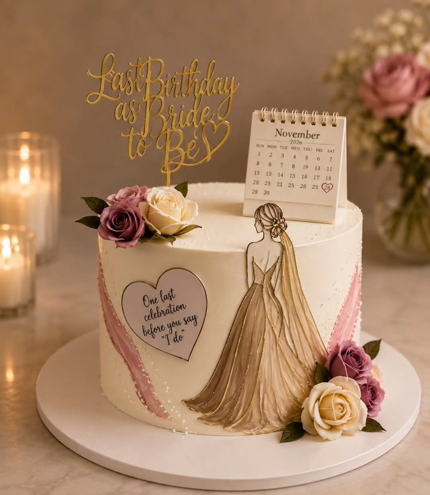

A white bride-to-be celebration cake with blush and ivory roses, gold accents, a bridal illustration, and a personalised calendar topper.
“One last celebration before " I Do"”Nisha’s original post >
Wedding cakes and gourmet cakes for all occasions, from Nisha D’Costa in Varca, Goa. Find a little inspiration for your next celebration.
Find your inspiration >
A real celebration by Nisha · View the post >A few sweet moments from Nisha’s own portfolio.
Real cakes, original captions, and a story behind every detail.
A white bride-to-be celebration cake with blush and ivory roses, gold accents, a bridal illustration, and a personalised calendar topper.
“One last celebration before " I Do"”Nisha’s original post >
A striking black birthday cake with red roses and a gold Happy Birthday message.
“For my dearest Godchild with lots of love, roses and sweetness”Nisha’s original post >
A blue-and-white 12th birthday cake with yellow and blue roses, small white flowers, lemon-slice decorations, and a gold number topper.
“Happy 12th birthday, filled with sunshine and smiles”Nisha’s original post >
A pink-and-white birthday cake with pink roses, gold edging, and personalised messages celebrating the recipient’s roles.
“Celebrating every beautiful role she plays”Nisha’s original post >
Two moments from Nisha’s recent reels.
Press play to explore the details.
A close-up of the blue-and-yellow floral birthday cake, showing the flowers, lemon decorations, and piped blue finish.
“Happy 12th birthday my beautiful Roseana. May you always bloom, shine and be blessed 😘❤️”Watch the original reel >
A pale blue elongated cake with white vintage-style piping, flower decorations, and lit candles.
“Made with love for my beautiful girl🥰”Watch the original reel >
Nisha’s public Instagram introduces her work as “Wedding cakes and gourmet cakes for all occasions.” Based in Varca, Goa, her profile is the place to explore her cake portfolio and get in touch.
Explore the real cake portfolio >Photos, logo, reels, and captions are sourced from @cakes.by.nisha. Descriptions explain the visible designs; flavours and prices should be confirmed with Nisha.
Think about the occasion, the date, and how many people you’re celebrating with.
A favourite colour, a mood, a meaningful detail. Save the things that make it feel like you.
Confirm availability, flavours, pricing, collection, and dietary requirements directly with the baker before booking.
Put your ideas into a handy enquiry draft. Copy it to share with Nisha via her verified Instagram account, or call the number listed in her bio.
Based in Varca, Goa. Contact details are from her public Instagram bio.